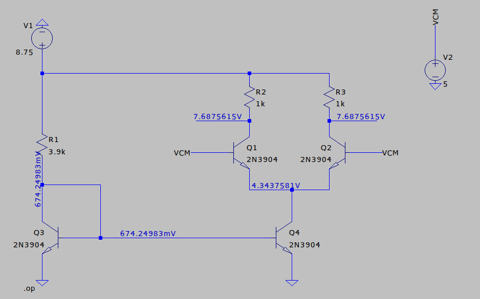
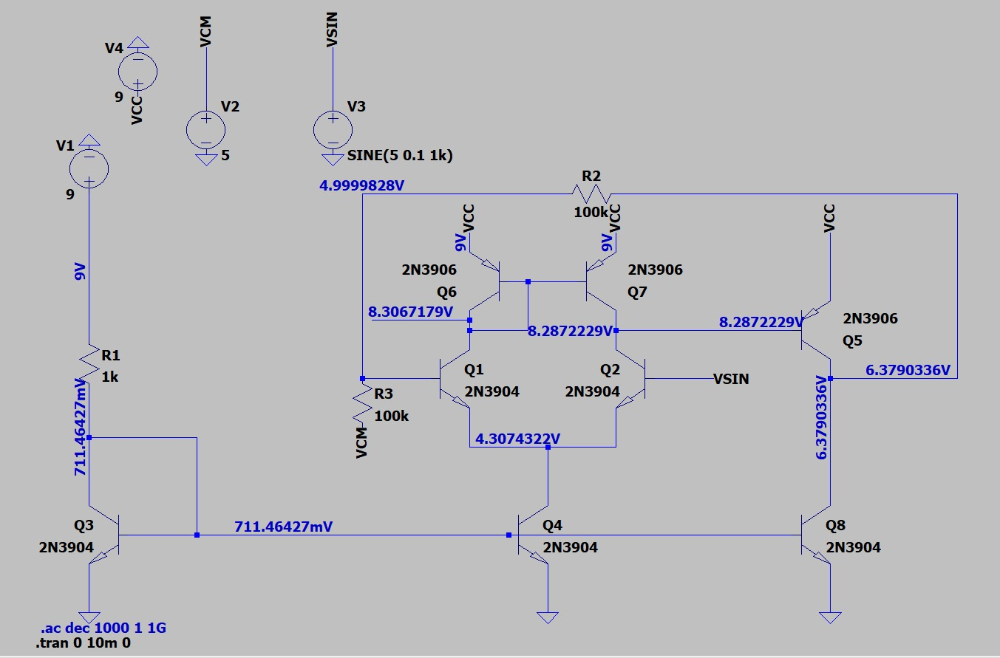
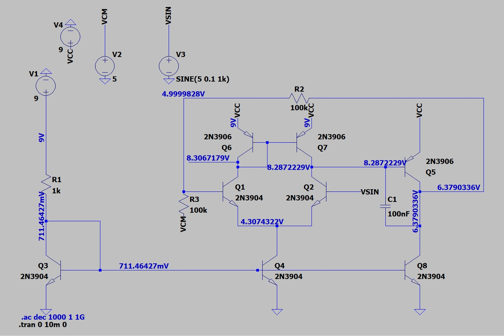

Diseño de la Fuente de Corriente, Par diferencial y espejo de corriente
La primera etapa implementada fue la fuente de corriente encargada de fijar la corriente del par diferencial. Esta se diseñó utilizando los transistores Q3 y Q4 (2N3904) en configuración de espejo de corriente.
El par diferencial está formado por los transistores Q1 y Q2 (2N3904).

Verificación del Punto de Operación
- ✓ Todos los transistores operan en región activa
- ✓ La corriente es estable
- Q3 actúa como transistor de referencia
- Q4 replica la corriente establecida por Q3
- ✓ El par diferencial presenta simetría
- ✓ El punto de operación es adecuado para continuar con la siguiente etapa
Diseño de la Etapa de Ganancia (Etapa con Degeneración)
Después del par diferencial se implementó una segunda etapa encargada de aumentar la ganancia de voltaje del amplificador. Esta etapa está formada por el transistor Q5 (2N3906) en configuración de emisor común.
A diferencia del par diferencial, esta etapa incorpora degeneración de emisor mediante la resistencia R5.
La resistencia en el emisor reduce ligeramente la ganancia máxima, pero mejora la estabilidad térmica, la linealidad y el control del punto de operación.

Verificación del Punto de Operación
- ✓ Q5 opera en región activa
- ✓ La degeneración estabiliza la corriente
- ✓ Se evita saturación del transistor
Carga Activa y Segunda Etapa de Ganancia
En esta versión del diseño se reemplazaron las resistencias de carga del par diferencial por un espejo de corriente activo formado por los transistores Q6 y Q7 (2N3906).
El uso de carga activa incrementa la resistencia equivalente en los colectores de Q1 y Q2, permitiendo un aumento significativo en la ganancia de voltaje del amplificador.

Resultado del Diseño
- ✓ Aumento considerable de la ganancia total
- ✓ Operación en región activa
Compensación en Frecuencia
Para garantizar la estabilidad del amplificador operacional se incorporó un capacitor de compensación (C1).
De esta forma se mejora la estabilidad del sistema sin afectar significativamente el funcionamiento de las etapas previamente diseñadas.

Resultado de la Compensación
- ✓ Se mejora la estabilidad del circuito
- ✓ Se evita la aparición de oscilaciones